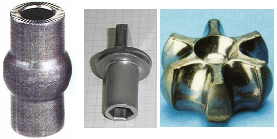
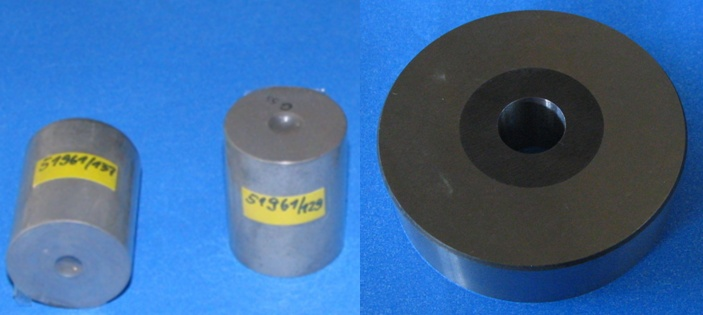
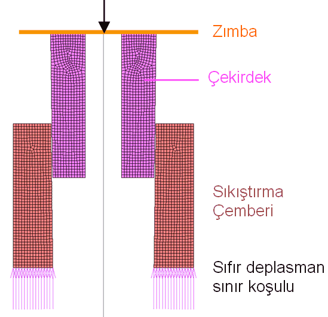
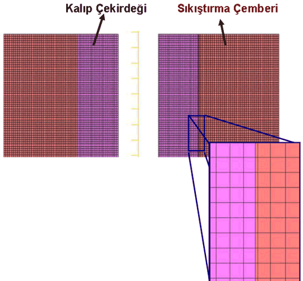

|
Not: Bu makale "MSC Software Kullanýcýlar Konferansý 2007"'de sunulmuþtur.
Özet:
Bu bildiride, Norm Cývata A.Þ.'de gerçekleþtirilen metal þekillendirme simülasyonlarýnda, kalýp gerilme analizlerin uygulama yöntemlerine iliþkin örnekler ve kalýp sýký geçirme iþleminin doðru modellenmesi için dikkat edilmesi gereken noktalar anlatýlmýþtýr. Sonlu eleman analizi ile dövme iþlemi sýrasýndaki kalýp gerilim daðýlýmýný görmek için, sürtünme, malzeme karakteristiði gibi parametrelerin yaný sýra, öngerilme iþleminin de doðrulukla modellenmesi gerekmektedir. Doðru bir þekilde modellenen dövme kalýp simülasyonlarý tasarýmcýlara çok önemli bilgiler vermektedir.
Anahtar Kelimeler: Soðuk Dövme, Sonlu Elemanlar Yöntemi, Dövme Kalýplarý
1. Giriþ
Dövme iþlemi, son zamanlarda geliþen teknolojiyle birlikte; hýzlý üretim, yorulma dayanýmý yüksek parçalar, yüksek yüzey kalitesi, çok az miktarda veya sýfýr hurda oluþturmasý gibi avantajlarý beraberinde getirmesi nedeniyle, tercih edilen bir üretim metodu konumuna gelmiþtir. Son zamanlarda þekillendirilme limiti yüksek çeliklerin üretilmesi, kalýp dayaným limitlerinin arttýrýlmasý amacýyla yeni teknolojiler ve yeni malzemelerin kullanýmý sonucunda dövme metodu ile oldukça karmaþýk parçalar üretilmeye baþlanmýþtýr (Þekil 1).
Özellikle soðuk dövme yönteminde, iþ parçasý - kalýp temas yüzeyindeki basýnç sýcak dövmeye göre daha fazla olduðundan, kalýp tasarýmý daha da önem kazanmaktadýr. Dövme sýrasýnda kalýplardaki gerilme daðýlýmýný incelemek için kullanýlacak en etkin yöntem Sonlu Eleman Analizleri'dir.
Bu makalede, soðuk dövme yöntemi ile gerçekleþtirilecek üretimler için yapýlacak kalýp gerilme analizlerinde izlenmesi gereken metodlar verilecek, ardýndan Nom Civata A.Þ. de gerçekleþtirilmiþ kalýp gerilme analizlerinden örnekler sunulacaktýr.
Norm Cývata A.Þ; üretim tasarýmý sürecinde sonlu eleman analizlerini kullanmaya 2003 yýlýnda baþlamýþtýr. Malzeme karakterizasyonu ve kalýp - iþparçasý arasýndaki sürtünme katsayýsýnýn belirlenmesinin ardýndan, 2005 yýlýnda baþlayan ve halen devam eden TÜBÝTAK - TEYDEB projesi kapsamýnda soðuk dövme simülasyonlarýna kalýp gerilme analizleri de eklenmiþtir. Kalýp gerilme analizlerinde doðru sonuca ulaþmada ilk adým olan 'sýký geçme' iþleminin modelleme sonuçlarýnýn doðruluðu analitik formüller ve deneysel sonuçlarla doðrulanmýþtýr.

Þekil 1 - Soðuk dövme yöntemi ile üretilmiþ karmaþýk parça örnekleri
(Sakamura, Nichidai Corp.)
2. Kalýp sýký geçme modellemesi
Baðlantý elemanlarýnýn soðuk dövme metodu ile üretiminde kalýp malzemesi olarak yüksek basma ve aþýnma dayanýmý ile düþük esneme özelliklerine sahip olan karbür malzemeler kullanýlmaktadýr. Fakat bu malzemelerin kýrýlganlýklarý fazla ve çekme dayanýmlarý düþüktür. Dövme sýrasýnda oluþan yükler sonunda karbür malzeme üzerinde çekme gerilmelerinin oluþmasýný engellemek için yüksek hýz çeliklerinden üretilen sýkýþtýrma çemberleri, karbür çekirdek üzerine sýký geçirilerek ön gerilme uygulanýr (Þekil 2) [1].

Þekil 2 - a) Karbür Kalýp Çekirdeði b) Sýký geçirilmiþ çekirdek ve sýkýþtýrma çemberi
Bu ön gerilme miktarýnýn düþük olmasý karbür çekirdek iç yüzeyinde çekme gerilmesi oluþumuna ve ani kýrýlmalara; fazla olmasý ise akma limiti düþük olan sýkýþtýrma çemberi malzemesinin plastik deformasyona uðrayarak sýkýþtýrma iþlevini yerine getirememesine sebep olur. Dolayýsýyla ön gerilme miktarýnýn doðru bir þekilde belirlenmesi oldukça önemlidir ve bunun için dövme iþlemi sýrasýnda kalýp iç yüzeyindeki basýnç deðerinin bilinmesi gerekmektedir.
Kalýp sýký geçirme iþlemi için kalýp üretim tesislerinde uygulanan yöntemler þunlardýr:
1. Sýkýþtýrma çemberinin ýsýtýlarak iç delik çapýnýn geniþletilmesi ve kalýp çekirdeði ile birlikte soðumaya býrakýlmasý
2. Temas yüzeylerine konik açý (30' - 2o) verilmiþ olan çekirdek ve sýkýþtýrma çemberinin hidrolik preste çakýlmasý
3. Veya ýsýtma ile çakma iþleminin birlikte yapýlmasý (sýkýlýðýn fazla olduðu durumlarda)
Kalýp sýký geçirme iþlemini sonlu elemanlar analizinde modellemek için uygulanabilecek yöntemler ise þunlardýr:
2.1. Isýtma - Soðutma Yöntemi: Öncelikle sýkýþtýrma çemberi tek baþýna modellenir ve uygulanan termal sýnýr koþullarý ile 500oC'ye ýsýtýlýr. Bir sonraki aþama olarak oda sýcaklýðýndaki kalýp çekirdeði modele eklenerek soðuma iþlemi gerçekleþtirir. Bu modelin saðlýklý çalýþmasý için kalýp çekirdeði ve sýkýþtýrma çemberi malzemesi ýsý kapasiteleri ve ýsý iletim katsayýlarý doðru bilinmelidir. Sýnýr koþulu olarak kullanýlacak ýsý akýsý veya sabit yüzey sýcaklýðý deðerlerinin yanlýþ girilmesi sonucu aþýrý hýzlý ýsýnma veya soðuma, bunun sonucu olarak da kalýplarda gerçekte olmayan plastik deformasyonlar gerçekleþebilir.
2.2. Presle geçime yöntemi: Bu yöntemle temas yüzeyine açý verilmiþ olan kalýp çekirdeði, deplasman sýnýr koþulu veya düzlemsel bir temas elemaný ile sýkýþtýrma çemberine itilir (Þekil 3). Bu yöntemin sonlu eleman modellenmesinde, sýkýþtýrma çemberi tabanýna 'sýfýr deplasman' sýnýr koþulu verildiðinde, sýkýþtýrma çemberinin esnemesi kýsýtlanmakta, ve kalýp çekirdeðine gerçekte var olandan daha fazla miktarda basýnç etki ediyor olarak gözükmektedir. Bu nedenle, bu yöntem kullanýlýrken Þekil 3'te görüldüðü gibi, sýkýþtýrma çemberi tabanýna sýfýr deplasman vermek hatalý sonuçlar ortaya çýkaracaktýr. Bunun yerine, sýkýþtýrma çemberi düz yüzeyi temsil edecek bir doðru üzerine oturtulmalý ve temas ayarlarý bu þekilde yapýlmalýdýr.
Pratik uygulamada, kalýp çekirdeðine 1-2 mm. arasýnda taþlama payý verildiðinden, ve çeperlerine basýnç uygulanan kalýp çekirdeði sýkýþtýrýldýðýnda esneyerek ekseni yönünde uzayacaðýndan, modellenen kalýp montajýnýn dövme iþlemlerine uygulanmasý, ve diðer kalýplarla temasý büyük zorluklar doðurmaktadýr. Yukarýda anlatýlan nedenlerden ötürü, presle geçirme iþleminin modellenmesi birçok açýdan sakýncalar içermektedir.

Þekil 3 - Preste kalýp sýký geçirme iþleminin modellenmesi
2.3. Üst üste bindirme yöntemi: MSC. Superform programýnýn bir özelliði olarak kalýp çekirdeði ve sýkýþtýrma çemberi að yapýsý istenen sýkýlýk oranýnda üst üste modellenip temas ayarlarý kullanarak sýkýlýk deðeri parçalar arasý temas parametresi olarak girildiðinde, yazýlým tek adýmda sýký geçirme iþlemini yapýp [2], iki parça için de tüm deformasyon ve gerilme analizlerini ayný adýmda gerçekleþtirmektedir (Þekil 4). Ayrýca, MSC. SuperForm yazýlýmýnda bulunan 'hold node' sýnýr koþulu ile, seçilen yüzeydeki düðüm noktalarýnýn, analiz sonrasý gerilme daðýlýmý deðiþmeden ilk pozisyonlarýna geri dönmesi saðlanýr. Bu özellik, kalýplara boyutsal doðruluk getirmektedir (Ör: kalýplar iç yüzeyi sýký geçirme iþleminin ardýndan taþlanarak son ölçüsüne getirilmektedir. Sonlu Eleman Modelinde, kalýp son ölçüsünde çizilerek að yapýsý örülür, iç delikte sýký geçirmeden dolayý meydana gelen büzüþme 'hold node' sýnýr koþulu ile ilk haline döndürülebilir)

Þekil 4 - Kalýp çekirdeði ile sýkýþtýrma çemberi arasýnda sýký geçme,
að yapýsýnýn üst üstte getirerek modelleme
Yukarýda anlatýlan yöntemlerin deneysel ve teorik sýký geçme sonuçlarý ile doðrulanmasý [3] numaralý referansta detaylý þekilde incelenmiþtir.
|